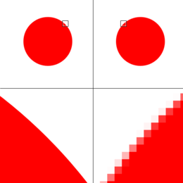

Bitmapafbeeldingen, ook bekend als rasterafbeeldingen, zijn opgebouwd uit een grid van pixels. Elke pixel heeft een specifieke kleur en samen vormen ze de volledige afbeelding. Bij het inzoomen op een bitmapafbeelding zie je de afzonderlijke pixels, wat kan leiden tot een onscherp of "pixelachtig" beeld.
Bitmapafbeeldingen hebben 2 belangrijke eigenschappen. Dit zijn tegelijkertijd ook 2 belangrijke nadelen:
- Een bitmapafbeelding kost veel opslagruimte. Vooral als je een foto met je mobiele telefoon maakt, de afbeelding kan dan tot wel 5MB groot zijn
- Als je een bitmapafbeelding gaat inzoomen, komen de losse pixels weer zichtbaar en is de afbeelding niet scherp.
Bitmapafbeeldingen worden gebruikt bij digitale fotografie (dus op je mobieltje), omdat ze in staat zijn om fijne details en rijke kleuren weer te geven. Ook worden bitmapafbeeldingen gebruikt bij websites. Zo worden er op websites veel achtergrondafbeeldingen gebruikt, wat onderdeel is van een bitmap afbeelding.
.jpeg)
Als je langs de snelweg een reclamebord ziet is dat een Vectorafbeelding. Een vectorafbeelding opgebouwd uit geometrische vormen zoals lijnen, bogen en punten die worden gedefinieerd door wiskundige formules. Hierdoor kunnen ze oneindig worden vergroot zonder dat er kwaliteitsverlies optreedt.
Vectorafbeeldingen hebben twee belangrijke voordelen:
- Vectorafbeeldingen kunnen zonder kwaliteitsverlies worden vergroot of verkleind. Dit maakt ze zeer geschikt voor toepassingen waarbij het formaat kan variëren.
-Over het algemeen hebben vectorafbeeldingen een kleinere bestandsgrootte in vergelijking met bitmapafbeeldingen, omdat ze alleen de wiskundige gegevens hoeven op te slaan in plaats van informatie over elke individuele pixel.
Maar vectorafbeeldingen hebben ook twee nadelen:
- Vectorafbeeldingen zijn minder geschikt voor gedetailleerde beelden zoals foto's, omdat ze niet de subtiele kleurverlopen en texturen kunnen weergeven die in bitmapafbeeldingen aanwezig zijn.
- Het maken en bewerken van vectorafbeeldingen vereist vaak speciale software zoals Adobe Illustrator of Inkscape.
hieronder zie je een afbeelding met aan de linkerkant een vectorafbeelding en aan de rechterkant een bitmapafbeelding.
Net als tekst, kleuren en afbeeldingen is geluid ook een vorm van informatie die we willen vastzetten in een computer. Geluid is een soort trilling door de lucht, die de speaker van je computer/ mobieltje maakt.
Met een microfoon is het mogelijk om geluid op te nemen. De microfoon zet de trillingen in de lucht over in een elektrisch signaal. De computer zet dit om naar digitale waarden. Dit proces noemen we samplen. Tijdens het samplen wordt er op een vast moment de sterkte van het geluid gemeten. In het grafiek hieronder staat hier een voorbeeld van samplen:

Als je de opgenomen punten in een grafiek zet, zie je dat het resultaat op een echt geluid lijkt. Hoe meer samples er worden opgenomen, hoe nauwkeuriger het resultaat is.
Het aantal samples dat per seconde wordt opgenomen heet de sample rate. De meeste liedjes worden opgenomen met een sample rate van 44.100 Hz. Dit betekent dus dat er 44.100 keer per seconde een geluidsfragment wordt gemeten. Hoe hoger de sample rate, hoe nauwkeuriger de digitale weergave van het geluid. Een te lage sample rate kan leiden tot verlies van details en vervorming van het geluid.
mocht het nogsteeds onduidelijk zijn volgt hieronder een uitleg video
klik hier voor meer uitleg